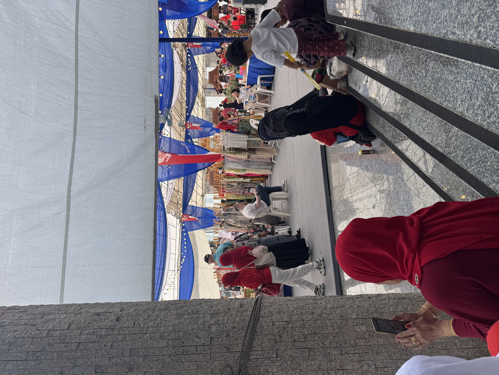
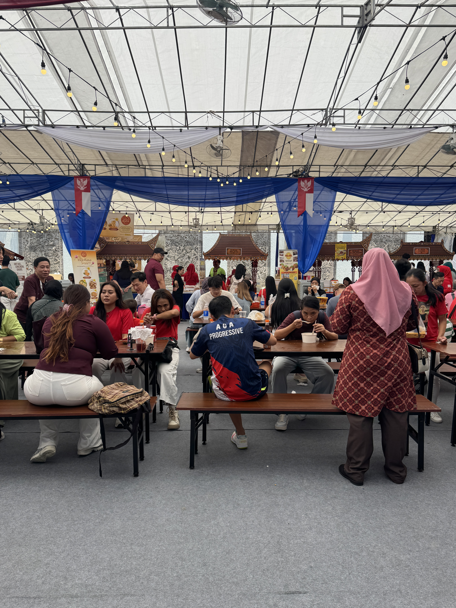
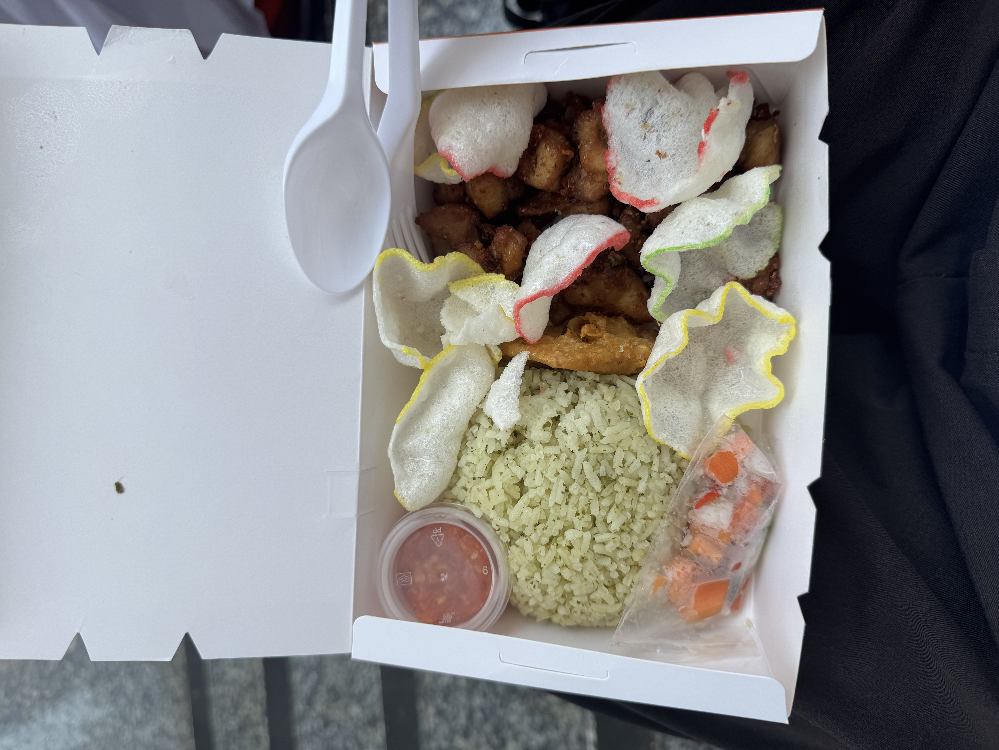

Research Exploration
During my time in week 1, I did more on-site research. There was an Indonesian festival that was happening in Singapore, called the color fest to celebrate Indonesia's 61st independence day. It was held in the Indonesian embassy, on the 23th of August 2026. When I first entered the festival the ambience was very different compared to Indonesia. The place was lively, the stalls were decorated quite nicely however it just doesn’t feel the same. Perhaps the jajan pasar I know is always rowdy, crowded and memorable because I had people to go with, which makes the experience different and much more exciting.


The reason why I went to this place was because I wanted to observe and collect first-hand data. Getting to know how the environment, the food and people in Singapore and comparing it to the one back is vastly different. It just makes me miss home so much more.


I did buy some Indonesian food at the festival, and I got to see some of the Indonesian snacks that were sold at the time. Although I went alone, I was able to capture some memories of this place.
Reflection
Over the summer break, after I finished my exchange programme from the UK, I quickly went back home because I missed home food so much that I was feeling home sick. And when I got home I started to eat so much indonesian food, from going out to eat street foods, visiting the jajan pasar just to eat traditional snacks, and more. I remember I ate Indonesian food every single day but when I came back to Singapore I began to realise that I don't eat a lot of Indonesian snacks. I tend to always eat fast food or other cuisines.
From there I began to question if it's only me who is experiencing all this? And that got me interested in researching and knowing more about the Indonesian food in Singapore.
I believe that doing this activity helps me understand more about Jajan Pasar. However, just doing on-site research wasn’t enough to help me get a solid rationale for my project since I lacked the fundamentals to give myself a strong background on what I wanted to research. I planned to read some more books that related to the food heritage in Indonesia, while I do think going for on-site research was helpful. I think books tell more than just from speculations and observations.